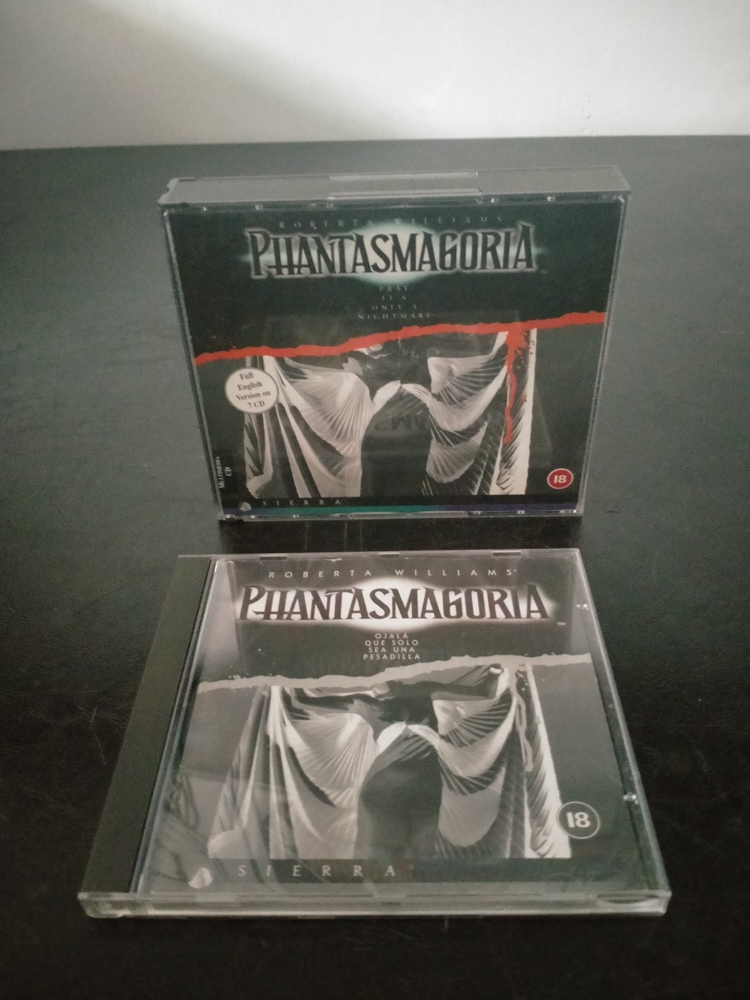

Ficha #000000
Roberta Williams' Phantasmagoria
Roberta Williams' Phantasmagoria es una aventura gráfica de terror publicada por Sierra On-Line en 1995 y concebida como una de las producciones multimedia más ambiciosas de la era del CD-ROM. La historia sigue a Adrienne Delaney, una escritora que se instala con su marido en una antigua mansión vinculada a un ilusionista y a una sucesión de crímenes sobrenaturales. El juego combina escenarios prerenderizados, actores filmados sobre fondos digitales, secuencias de vídeo a pantalla completa y una interfaz point and click simplificada. Su producción necesitó siete CD-ROM, una cantidad excepcional para la época, y destacó por su tratamiento explícito de la violencia, su clasificación para adultos y la controversia que acompañó a su lanzamiento. Esta edición europea en estuches jewel case corresponde a la versión íntegra en inglés y documenta el periodo de expansión del videojuego cinematográfico para Windows durante mediados de los años noventa.
- Formato
- Jewel Case
- Plataforma
- Win3.x Win95
- Género
- Aventura gráfica Point and click Terror psicológico FMV Aventura para adultos
- Serie
- Todos Jewel Case
- Desarrollador
- Sierra On-Line
- Distribuidor
- Sierra On-Line
- EAN
- —
Contenido de la edición
- Estuches Jewel Case
- 7 CD-ROM
- Manual de instrucciones
Preservación
- Protección
- No determinado
- Formato recomendado
- BIN/CUE
- Jugable en virtualización
- Sí
Preservar los siete CD-ROM mediante imágenes BIN/CUE individuales, manteniendo el orden y la identificación de cada disco. Conviene conservar también el manual y documentar la versión ejecutable, el idioma y cualquier actualización incluida. La ejecución virtual es viable mediante una máquina virtual con Windows 3.1 o Windows 95, montando las imágenes de disco cuando el programa solicite el cambio de CD.